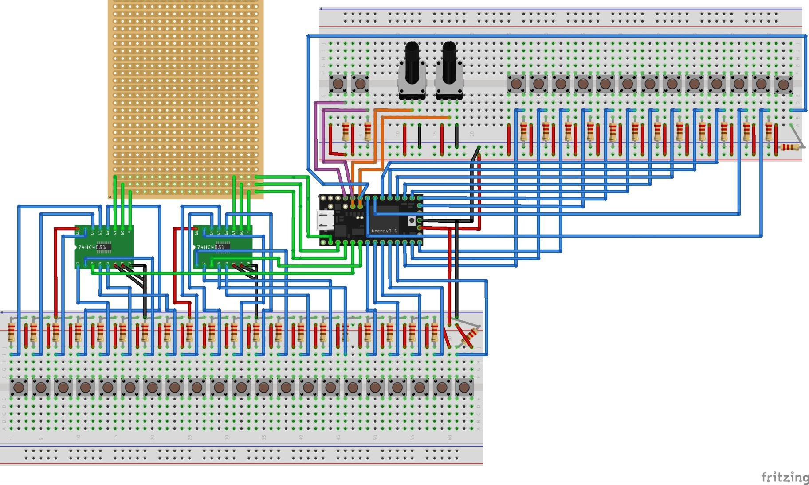
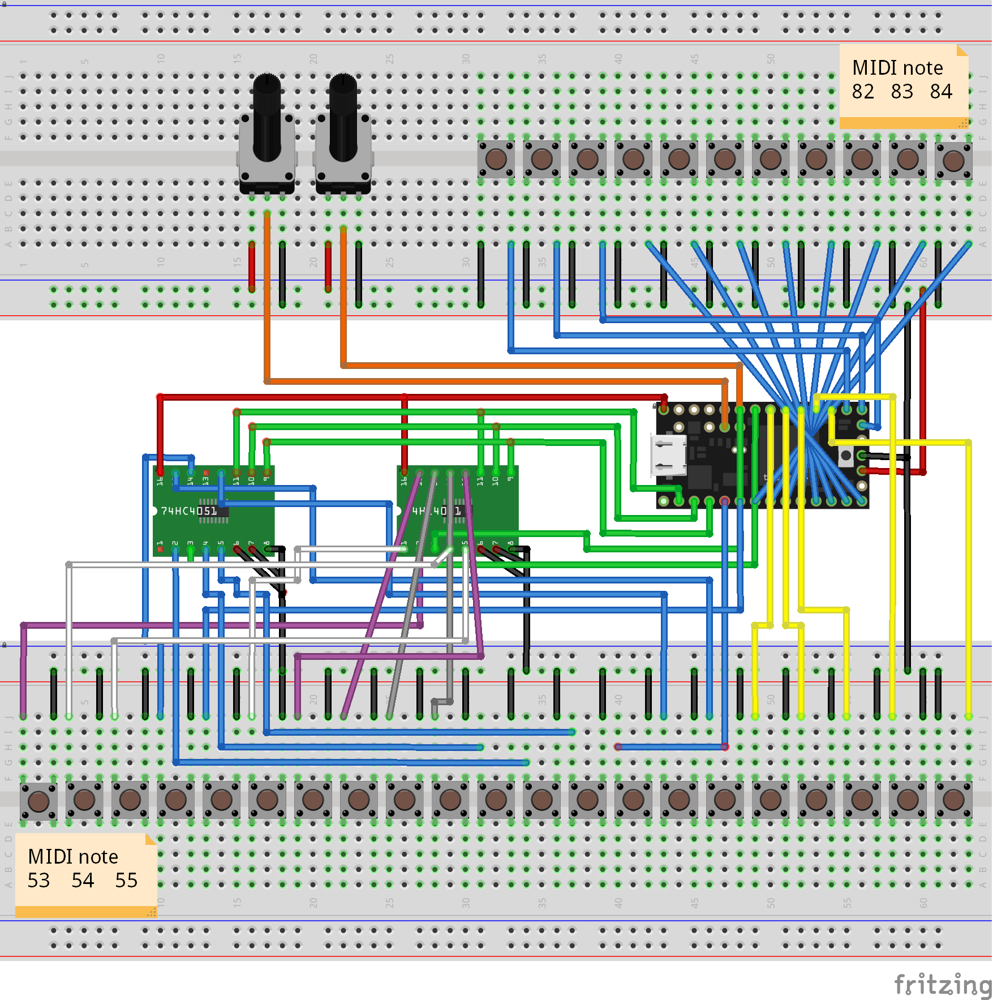
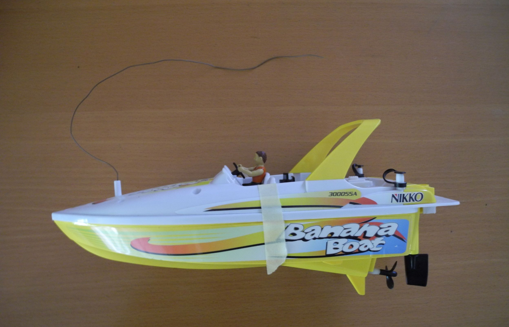
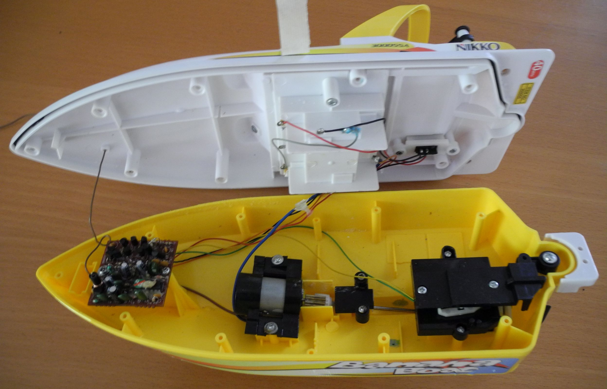

I had an old children piano laying around and I wanted a keyboard to plug into the computer and to experiment around with (I'm a music noob).
So I build myself a USB keyboard. I started with an Arduino Uno, not knowing that it does not support direct USB. For that you need an Arduino
Leonardo, which has the USB chip built-in, allowing direct USB communication. Another microprocessor caught my attention, the Teensy family.
I decided they were perfect fo me, so I purchased a Teensy LC. My first try was connecting each key with a pull-down resistor to ground. That
didn't work well because some keys also triggered their neighbors and it just sounded horrible. At least my idea was working, I could play the
piano and it sends the right MIDI commands. I added some potentiometers where the power plug used to be. I also tried to use some of the original
switches of the keyboard, but they didn't work. The whole board was just poor quality, thin wires, all buttons are just thin
metal sheets. I also thought of using the original speaker and the original oscillator, but I dropped the idea soon. BTW, the original keyboard
worked with an oscillator connected to a speaker and when you pressed a button, the current would go through a bunch of resistors, causing the
oscillator oscillate in the right frequency.

After weeks frustrated weeks of doing nothing I decided to switch to pull-up resistors, because the Teensy has one built-in. That meant a lot of
soldering, but in the end it was worth it, because (almost) everything worked perfectly. I still had two buttons that were somehow triggered together.
I could not track down the problem (they were on the ICs), so I decided to use the two leftover inputs from the original button failure. And well,
now everything works.

I already composed a music track with samples with this keyboard. You can download the track here.
(But don't judge me, I have literally no idea what I'm doing). Later, I added octave shifting with the right and left key.
I know the cable management is really messy, but at least it works. I cannot guarantee that this works for you and I'm not responsible if you damage something when using my .ino or try to build this keyboard. You can download my .ino file here.
This fun toy unfortunately didn't like the saltwater I put it in someday. I dried it, but it seemed that the water got into the boat and damaged the circuit board. It's now laying in the basement until I repair it. The motor still works and my plan is to reactivate it. After some testing I found out that the propeller is driven by a normal DC motor and the rudder is not a servo but a bipolar motor and some springs to set it in the middle position. Both motors only have two wires and because I wanted to drive backwards, I needed an IC that could control two bipolar motors. Luckily they are needed often and I decided to go with a L293D which is often used in tutorials. I also did a bit research about the bluetooth microcontroller and I found the BBC micro:bit, which offers unbeatable features for it's price of 16 €. After all parts arrived I built a test circuit to make sure it works th way I want it. Time to take a look at the Microbit IDE. After a bit of research, I realized I had no choice. The popular micropython IDE (which even has simple TTS) does not support Bluetooth (because it consumes too much storage) and I need Bluetooth for connection. Luckily there is no learning involved because Makecode uses Google Blockly, the same engine as in App Inventor, but in a newer version. The project then made no progress for months because I was not able to make a stable connection. After months of not making progress, I wanted to finally finish this project. I then used my old phone and it worked perfectly. On my Moto G (3rd Gen), the micro:bit Blue app did not recognize the microbit, although it was connected. On my old Moto E (1st Gen) the app worked perfectly. The strange thing is that both phones have Bluetooth 4.0. Sure enough the test cicuit worked. One problem left was that I need three different voltages: 3V for the micro:bit, 5V for the L293D and 9V for the motors. As the boat has a battery pack, I decided to use two batteries for 3V and all six batteries for 9V. I then built a circuit to go from 9V to 5V. I could have used three batteries to get 4.5V, but I decided to go with the clean variant. After testing everything, I soldered everything to a breadboard. But when I wanted to make the final test, the micro:bit was not powering on. At least that's what I thought. When I connected it to a computer, it was showing up as "MAINTENANCE" and not as "MICROBIT". After some googling, I found out that this is a known problem (bad capacitor) I contacted my seller and sure enough he sent me a new one. I soldered the wires to the pins again, made a test drive and it works! The range of Bluetooth LE is enough for this purpose. There are some minor issues to fix, e.g. adjusting the rudder, but the project is finally done.
